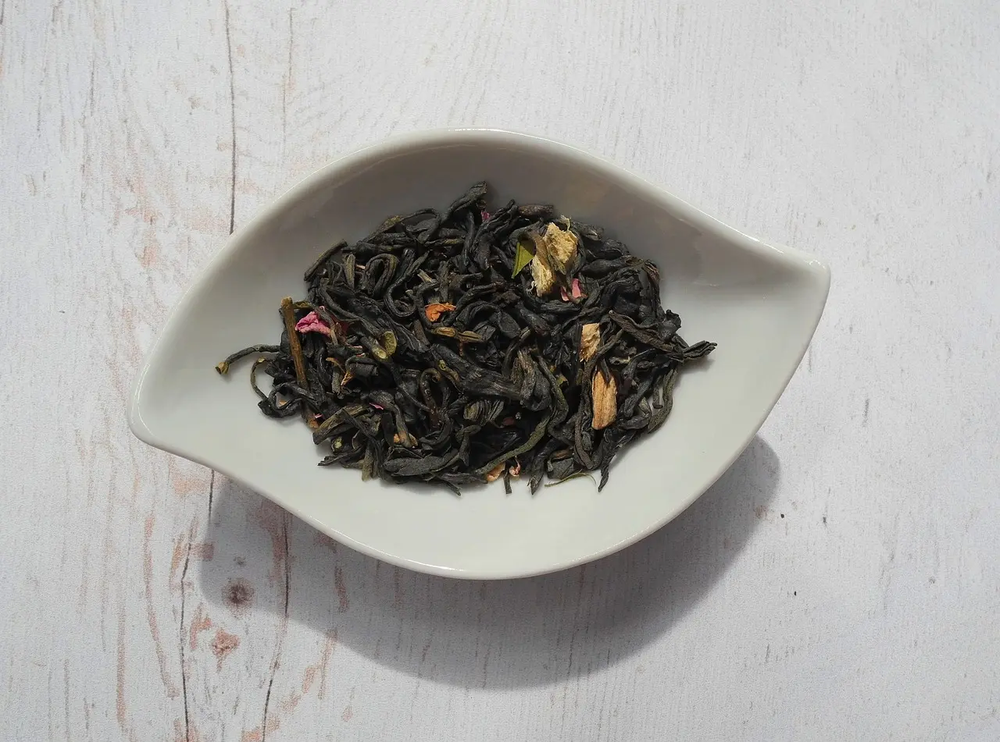

The Rarest and Exotic Tea Types on the Planet
There are many different types of tea available all around the world. Among all of them there are a few of them that are considered the rarest, mainly because there are only a few of them available and the other reason being that they only can be found in unique seasons. The Tea Types that are difficult to find are the ones that are usually the expensive and premium ones. Here are some of the rarest and exotic teas that can be only found in some places on the planet.
-
Da Hong Pao Oolong Tea
This is a rare variety of Tea that is usually found on the Wuyi Mountains of China. This is considered a very strong Tea which is heavily oxidized but has a fantastic taste to it. This Tea type is said to have great healing properties and it was used in the ancient China to heal various variety of illnesses.
This Tea cannot be kept for very long and the strong sweet taste of the tea is generally considered a good beverage when having snacks. Even though this Tea is very sweet and addictive to drink, it is not recommend to have too much at a time as it will cause slight irritation in the stomach for some people. -
Great White Grape Tea
The Great White Grape Tea is a mixture of both white and green tea and this variety of Tea Type if also mostly found in China. Many people are unware of this Tea Type and because of that reason it is considered a rare and exotic Tea type.This Tea Type has a very delicious taste to it, although it is a bit bitter.
The smell of the leaves itself is strong compared to any other Tea Leaves. This Tea Type will taste fantastic when it is consumed as iced tea. A small quantity of the leaves is enough to experience it’s amazing taste. The Great White Grape Tea is a bit expensive but it is well worth the price.
-

Assam Mangalam Black Tea
The Origin of Assam Mangalam Black Tea is India. It’s quite an expensive Tea type which is highly demanded by many countries. Mass production of this tea type began in the year 1973 and ever since then, this Tea is considered a premium high-quality tea. The aroma of this tea is close to honey and it has a very sweet taste to it. This Tea can be drunk alone without the addition of milk. It is highly recommended to have this Tea in the morning hours because it is considered to be refreshing.
-
Drum Mountain White Cloud Tea
This Tea was originally called as “Gu Shan Bai Yun” and it is planted on the Drum Mountain of China. For centuries the monks on the Drum Mountain had been planting this Tea type and the world didn’t know much about this tea type until an explorer, “Robert Fortune” visited the mountain and he was amazed on the taste of this tea. This Tea has a mild sweetest to it and has a nut like flavor which makes it so special. This Tea is also quite expensive and is difficult to come across in many countries.